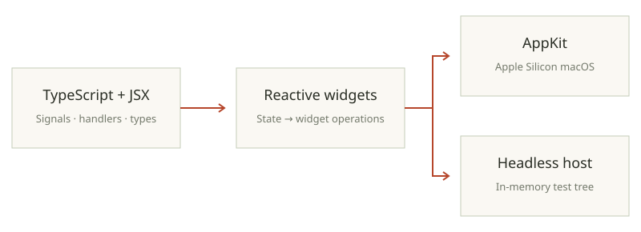

Built in. Typed throughout.
The public kiln modules, JSX entry point, parallel collection methods and HTTP server globals, with TypeScript examples and platform limits.
Typed APIs shipped with the runtime.
Four public kiln: modules cover concurrency, shared data, subprocesses and native interfaces. GUI also exposes an automatic JSX runtime entry point. kiln check embeds their TypeScript declarations. Other TypeScript tools can use @kiln/types in compilerOptions.types; JSX uses jsxImportSource: "kiln:gui".
| Public module | Use | Key exports |
|---|---|---|
| kiln:actors | Isolated state and typed asynchronous calls | spawnActor, ActorRef, transfer, isolate |
| kiln:shared | Immutable data graphs across realms | share, isShared, Shared<T> |
| kiln:process | Subprocess output and cancellation | run, RunOptions, RunResult |
| kiln:gui | Reactive native UI; macOS AppKit provider | createSignal, render, runApp, widgets |
| kiln:gui/jsx-runtime | Automatic JSX transform entry point | jsx, jsxs, Fragment |
Actors and shared graphs.
kiln:actors creates module-addressed realms with typed method calls, bounded mailboxes and explicit shutdown. Ownership APIs choose cloned messages, transferred buffers or certified isolated graph moves. kiln:shared creates deeply readonly snapshots of records, arrays, Maps and Sets, retained across native sends instead of copying the graph again.
Runnable typed actor, sharing and parallel examples →
Run a subprocess without a shell.
import { run } from 'kiln:process';
const result = await run('printf', ['Hello from kiln\n']);
console.log(result.exitCode);
console.log(new TextDecoder().decode(result.stdout).trim());kiln check process.ts
kiln run process.ts
kiln run --native process.ts
# 0
# Hello from kilnrun(command, args, options) collects stdout and stderr as Uint8Array values. Supply input as text or bytes to write and close stdin, or an AbortSignal to kill the child and reject with its reason. The result separates exitCode from signal. This example uses the system’s printf command.
Build a native interface with TypeScript and JSX.
Save the counter with tsconfig.json to enable the JSX checker and package.json to declare ESM.
/** @jsxImportSource kiln:gui */
// The smallest kiln:gui app: one signal, two buttons, a label that follows.
//
// kiln run --native examples/gui-counter.tsx
import { createSignal, runApp } from "kiln:gui";
function Counter() {
const [count, setCount] = createSignal(0);
return (
<window title="Counter" width={280} height={150} align="center" justify="center">
<text variant="largeTitle">{() => count()}</text>
<hstack>
<button onPress={() => setCount((c) => c - 1)}>−</button>
<button variant="primary" onPress={() => setCount((c) => c + 1)}>+</button>
</hstack>
</window>
);
}
runApp(<Counter />);kiln check gui-counter.tsx
kiln run --native gui-counter.tsxSignals, memos, effects and cleanup scopes drive native widgets. JSX describes windows, layout, text and controls; handlers update the state rather than rebuilding a browser DOM. The public module also provides dialogs, clipboard services, notifications and a headless widget host for tests.

The v0.1.0 native GUI provider uses AppKit on Apple Silicon macOS. Published Linux archives omit that provider and refuse programs importing kiln:gui. The headless host is an API for testing widget logic, not a Linux native GUI provider. The counter sample is type-checked here; interactive execution requires the macOS release.
Built-ins that do not need an import.
Arrays expose parallelMap, parallelFilter, parallelFlatMap, parallelSort and parallelReduce; typed arrays expose map, filter, sort and reduce variants. The compiler checks callback effects, and native execution can use multiple cores with sequential fallbacks. For parallelReduce, use an associative combine function and an identity initial value; its pairwise reduction order differs from a sequential fold.
Kiln.serve accepts a handler taking Request and returning Response or Promise<Response>. Bun.serve exposes the same implementation for this API; it does not imply compatibility with the whole Bun runtime.
const server = Kiln.serve({
port: 3000,
fetch(request: Request): Response {
return new Response(`Hello, ${new URL(request.url).pathname}\n`);
},
});
process.on('SIGTERM', () => server.close(() => process.exit(0)));kiln check serve.ts
kiln run serve.ts
# curl http://localhost:3000/typescript
# Hello, /typescriptExtensions can be disabled with KILN_EXTENSIONS=0 while running or fixed at build time with kiln build --no-kiln-extensions. Core node:* APIs remain the separate Node compatibility surface.
Public declaration entry pointSubprocess typesGUI and JSX typesServer globalsGUI architecture and platform support